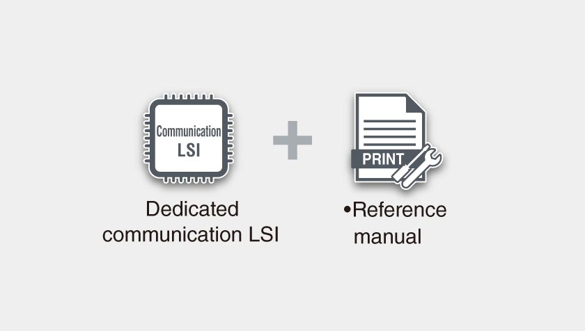
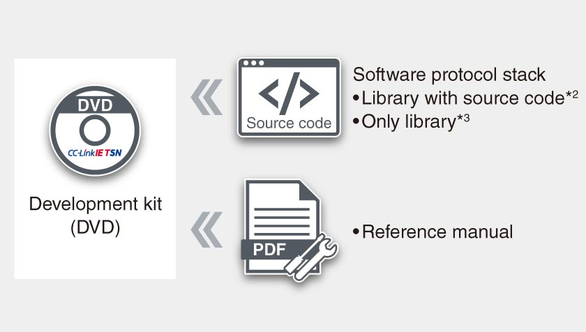
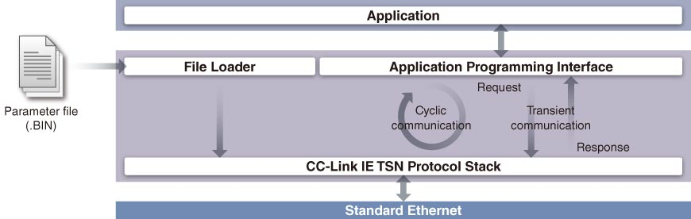
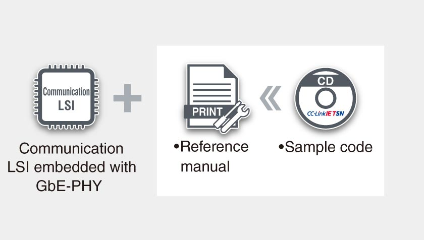
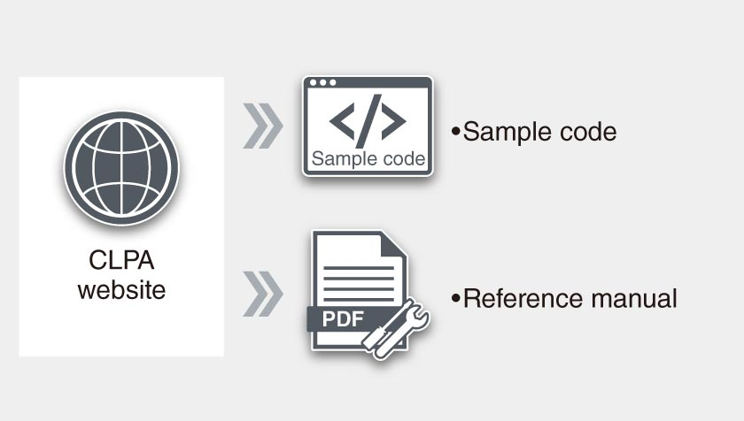
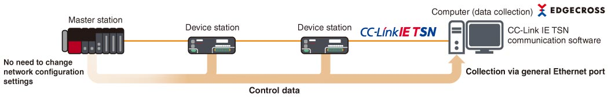

Network-related products |
Programmable Controllers MELSEC
Produk CC-Link IE TSN

Kit pengembangan
LSI komunikasi khusus CP610
- Stasiun induk/stasiun lokal CC-Link IE TSN dapat dikembangkan tanpa mempertimbangkan protokol
- Memungkinkan pemilihan MPU dan OS secara bebas. Kode contoh yang disesuaikan menurut spesifikasi perangkat keras dan aplikasi dapat disediakan
- Pengaturan parameter dan diagnostik stasiun induk/stasiun lokal CC-Link IE TSN dapat dilakukan menggunakan alat pengaturan CC-Link IE TSN yang disertakan dalam kit pengembangan kode sumber
- Menyediakan model SPICE untuk antarmuka PCI Express® dan model IBIS untuk antarmuka lain sebagai model simulasi transmisi*1

- *1.Perjanjian kerahasiaan perlu ditandatangani untuk menyediakan model SPICE dan model IBIS. Silakan hubungi kantor penjualan Mitsubishi Electric setempat.
Master station software development kit (SDK)
- Berbagai sistem dapat dikonfigurasi menggunakan tumpukan protokol perangkat lunak tanpa mempedulikan spesifikasi komputer
- Kepatuhan API dengan CANopen® memudahkan pengembang produk yang kompatibel dengan CANopen® untuk mengembangkan produk yang kompatibel dengan CC-Link IE TSN
- Paket kode sumber dapat disesuaikan, memungkinkan perluasan fungsi dan pemindahan ke berbagai lingkungan pengembangan
- Kit dengan pustaka memungkinkan konfigurasi sistem dengan biaya lebih rendah
- Fungsi tertanam meningkatkan perangkat dengan menggunakan fitur seperti menggabungkan komunikasi TCP/IP

- *2.SW1DTD-GNSDK1M
- *3.SW1DTD-GNSDK2M

LSI komunikasi tertanam dengan GbE-PHY CP620
- Stasiun jarak jauh CC-Link IE TSN dapat dikembangkan tanpa mempertimbangkan protokol
- GbE-PHY yang tertanam memungkinkan pengembangan pola sirkuit komunikasi yang lebih mudah dengan lebih sedikit komponen periferal dan sirkuit yang diperlukan di sekitar CPU dan GbE-PHY, sehingga mengurangi ukuran papan
- Kode sampel yang disesuaikan menurut spesifikasi dan aplikasi perangkat keras dapat disediakan
- RTOS perangkat keras yang tertanam*4 mengurangi beban CPU dan konsumsi daya

- *4.RTOS: Real-time operating system
Contoh kode untuk stasiun jarak jauh CC-Link IE TSN kelas A (disediakan oleh Asosiasi Mitra CC-Link)
- Perangkat yang mendukung stasiun jarak jauh CC-Link IE TSN kelas A dapat dikembangkan hanya dengan menerapkan tumpukan protokol perangkat lunak pada perangkat yang dilengkapi dengan antarmuka Ethernet
Unduh contoh kode dari situs web Asosiasi Mitra CC-Link di bawah ini.
https://www.cc-link.org/en/cclink/cclinkie/code_cclinkie_tsn.html 

Perangkat lunak komunikasi
Perangkat lunak komunikasi CC-Link IE TSN untuk Windows® (pengumpul data CC-Link IE TSN terlampir)
- Mengumpulkan data kontrol akurat perangkat CC-Link IE TSN dengan mudah
- Data yang dikumpulkan dari pustaka fungsi dapat digunakan untuk analisis dan pemantauan data
- Mewujudkan analisis data akurat dengan pengumpulan data kontrol dengan stempel waktu
- Mengurangi biaya konfigurasi untuk mewujudkan sistem pengumpulan data sederhana sebagai pengaturan mudah dengan menggunakan perangkat lunak berbasis komputer
- Pengumpul data CC-Link IE TSN memungkinkan integrasi dengan Edgecross
